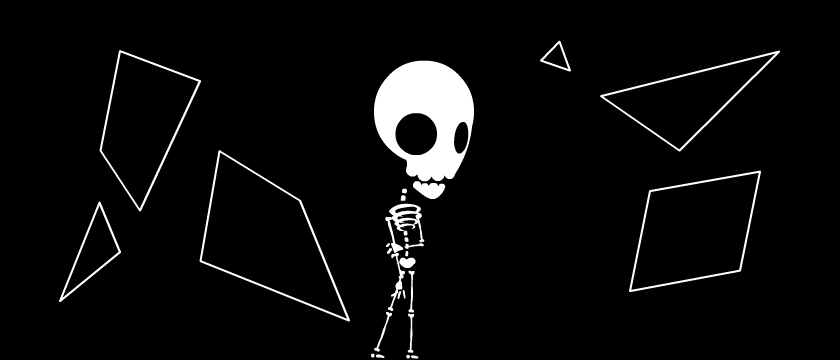
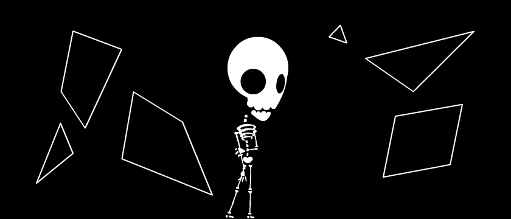

(move mouse around in the box below) This effect is used in my new open-source game, Nothing To Hide. (last day to support the project!) But it's also found in many other games, such as Monaco or Gish. And if this tutorial does its job... maybe your next game, too.
I will show you each step and mistake I actually made, as I learned how to create this effect. First, I created some boilerplate code. The demo below just draws a bunch of line segments and tracks your mouse position. (note: there are four line segments for the box's border) This next step is the most math-y part. Don't worry, it's just algebra. I project a ray onto the line segments, and find the first intersection.
Remember, a line can be described in parametric form like so:
Point + Direction*T
Infinite Line (-Infinity < T < Infinity), Ray (0 < T < Infinity), and Line Segment (0 < T < 1) Whew! Now that that's over with, let's have some fun! I cast out 50 rays in all directions: Then, I thought, I could just simply connect the dots, (where rays intersect with line segments) and get a good visibility polygon. However, this is what it ended up looking like... Darn. And it didn't matter even if I had 360 rays for 360 degrees, it still looked weird. This was my biggest stumbling block, until I realized - I don't have to cast rays in all directions. I only need to cast them towards the ends of each line segment.
For each (unique) line segment end point, I cast a ray directly towards it, plus two more rays offset by +/- 0.00001 radians. The two extra rays are needed to hit the wall(s) behind any given segment corner. Next, I sort the intersection points in order of their ray's angle. This lets me simply connect the dots clockwise, and draw a smooth visibility polygon like this: Finally! Something that actually looks decent. By drawing extra visibility polygons, casting rays from a slightly offset position, I can create "fuzzy" shadows like the ones below. The red dots show each of the 11 origin points - yes, there are 11 visibility polygons! And just to top it all off, I drew these two images...
 

...and blended them together, using the fuzzy shadows as an alpha mask. I already showed you the creepy result of that at the top of this page. So here is a different iteration, with multiple light sources. Multiple light sources. Casting shadows. A giant laser bomb. Showing what your player/enemies can or can't see. The 2D visibility/lighting effect can be very flexible, and with the right creative touch, can add a lot of extra oomph* to your game.
Let there be light!
* totally a real technical term